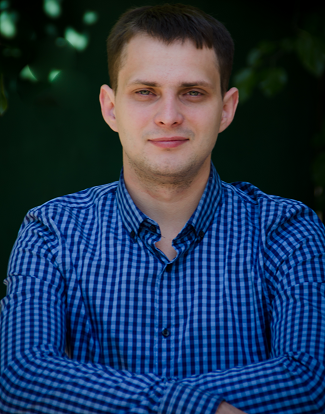

Andrey ZorinLocation: Dnepr, UkraineAndreyZorin@pm.me Github profile Linkedin profile Personal strengths: Quick analytical mind, logical thinking, moderate perfectionism, the desire to improve knowledge and skills. |
 |
Qualifications |
|
Experience | |
| June 2017 – January 2018 | Participation in the development of the Spring/JPA Enterprise application with permissions and role-based access with Maven, Spring MVC, Security, REST (Jackson), Java 8 Stream API.
Technology stack:
|
| 2014 – 2016 | Freelancer (Mainly worked with PHP, MySQL and Wordpress framework) |
Education | |
|
National metallurgical academy of Ukraine |
|
| 2015-2016 | Master in economic computer science (graduated with honors) |
| 2011-2015 | Bachelor in economic computer science |
Training | |
|
Write101x | edX |
|
| 10/2017 - 12/2017 | English Grammar and Style course |
|
Javaops internship |
|
| 06/2017 - 05/2018 | Development of a full-featured Enterprise application based on Spring framework (Certificate) |
|
Javarush online course |
|
| 01/2017 - 06/2017 | Courses: "Java core", "Java multithreading", "Java collections" |